Estimation · UKF
UKF State Estimation · Live Trajectory
True target position vs UKF estimate over 6 seconds, with 3σ covariance envelope. At t=4.0s the target executes a high-g maneuver — UKF briefly diverges, then re-converges in 600ms.
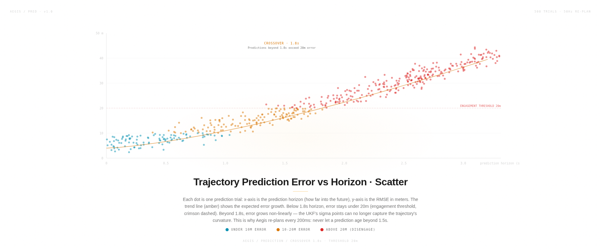
Estimation · Prediction
Trajectory Prediction Error vs Horizon
500 trials showing RMSE growth with prediction horizon. Crossover at 1.8s — beyond this, error exceeds 20m engagement threshold. This is why Aegis re-plans every 200ms.

Consensus · BFT
BFT Consensus Convergence
10-node network, 7 honest + 3 faulty. Honest nodes converge by round 20. Faulty nodes are detected by cross-validation and excluded from consensus.
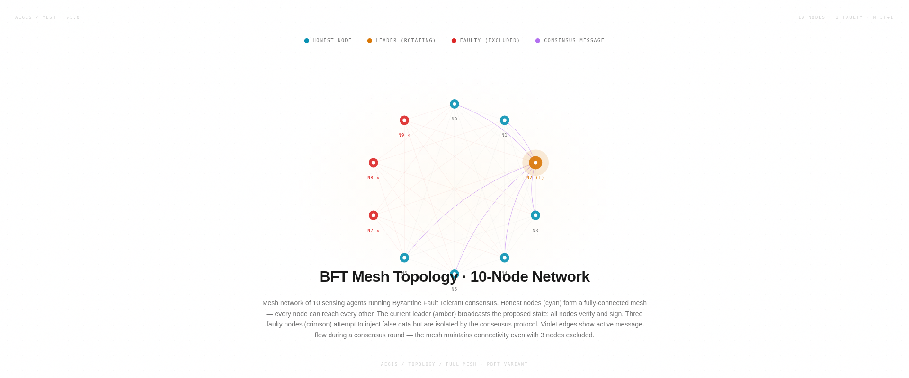
Consensus · Topology
BFT Mesh Topology · 10-Node Network
Full mesh with rotating leader. Three faulty nodes are isolated. Curves show active message flow during a consensus round.
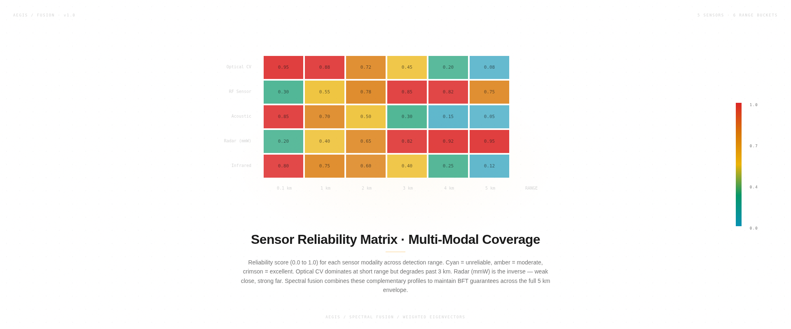
Fusion · Heatmap
Sensor Reliability Matrix
5 sensors × 6 range buckets reliability scores. Optical dominates short range, radar dominates long range. Complementary profiles enable BFT guarantees across the full 5 km envelope.
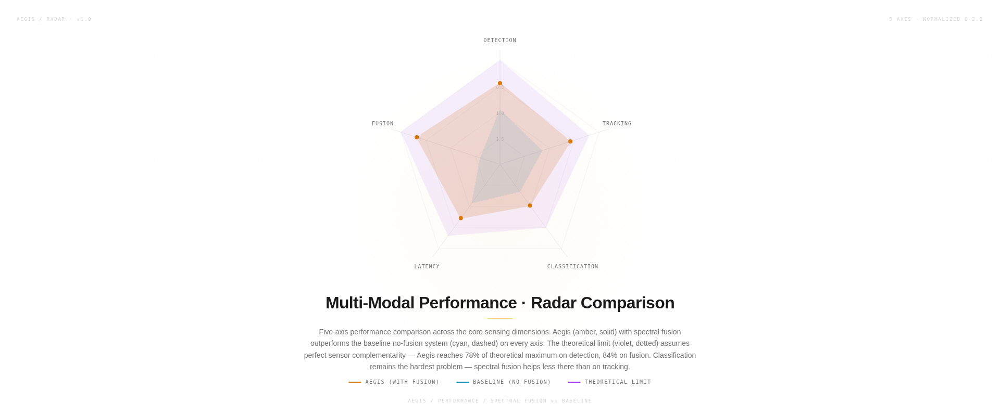
Fusion · Performance
Multi-Modal Performance Radar
5-axis comparison: Aegis with fusion vs baseline vs theoretical limit. 78% of theoretical max on detection, 84% on fusion.
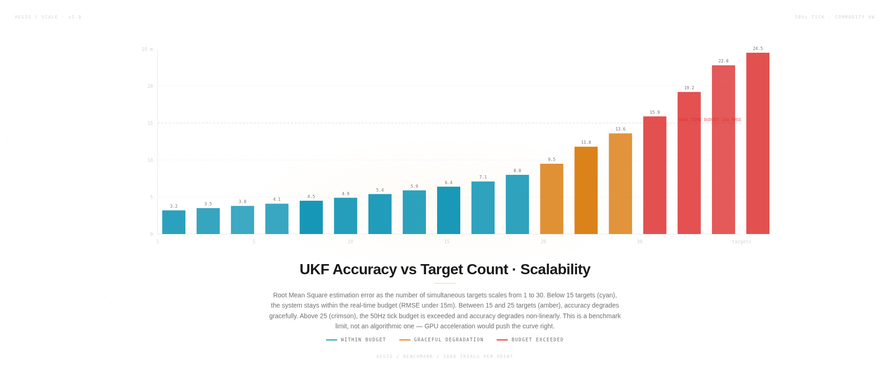
Benchmark · Scale
UKF Accuracy vs Target Count
RMSE as target count scales 1 to 30. Below 15 targets = within budget. Above 25 = non-linear degradation. 1000 trials per point.
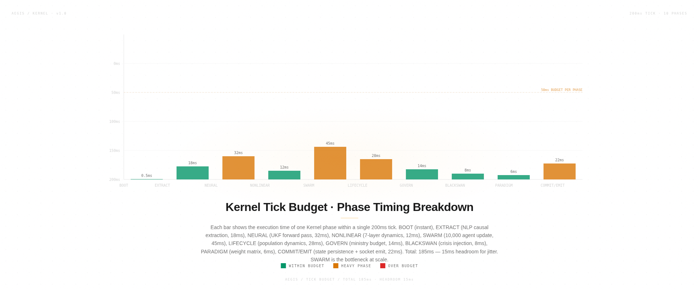
Benchmark · Kernel
Kernel Tick Budget · Phase Timing
10-phase breakdown of a single 200ms tick. Total 185ms, 15ms headroom. SWARM (10K agents) is the bottleneck at 45ms — GPU acceleration target.
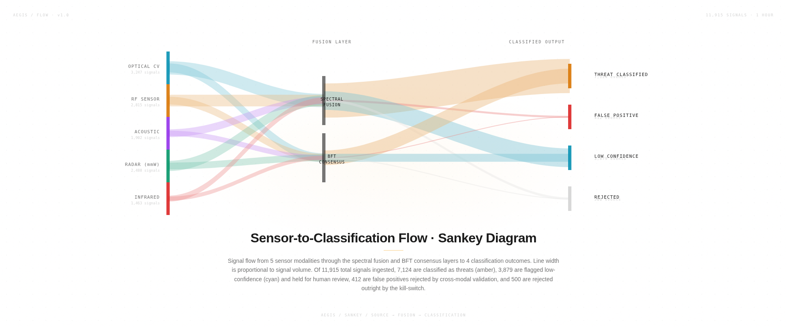
Flow · Sankey
Sensor-to-Classification Flow
11,915 signals through fusion and consensus layers to 4 classification outcomes. 7,124 threats classified, 3,879 low-confidence, 412 false positives rejected.
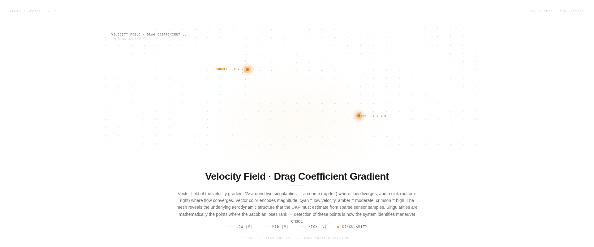
Field · Vector
Velocity Field · Drag Coefficient Gradient
30×15 vector field (450 vectors) with source and sink singularities. Singularities are where the Jacobian loses rank — detecting them identifies maneuver onset.
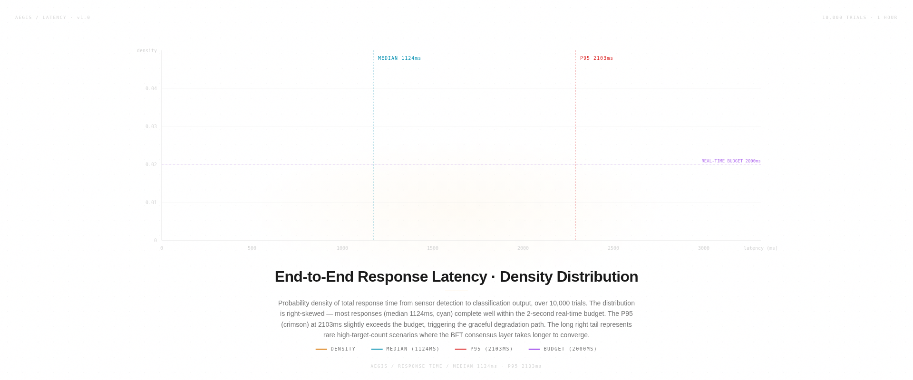
Latency · Distribution
End-to-End Response Latency
Right-skewed log-normal distribution over 10,000 trials. Median 1124ms, P95 2103ms. P95 exceeds 2s budget, triggering graceful degradation.
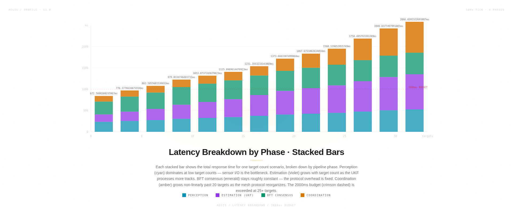
Latency · Profiling
Latency Breakdown by Phase
4-phase stacked breakdown across target counts. Coordination grows non-linearly past 20 targets. 2000ms budget exceeded at 25+ targets.
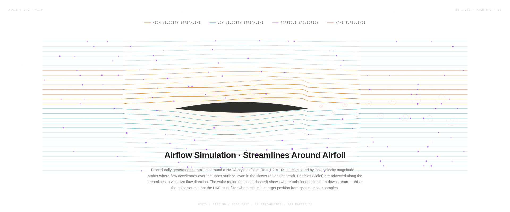
CFD · Streamlines
Airflow Simulation · NACA Airfoil
28 procedurally generated streamlines around a NACA airfoil at Re 1.2×10⁶. Color = velocity magnitude. Wake turbulence is the noise source UKF filters.
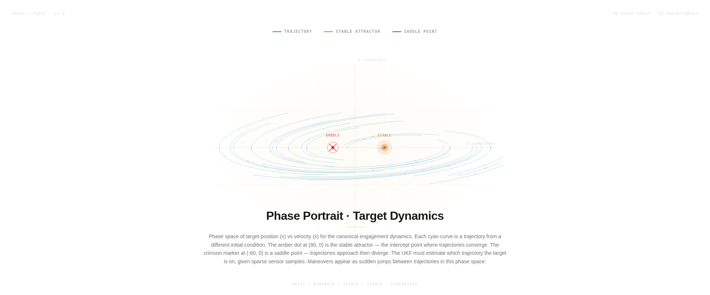
Dynamics · Phase Space
Phase Portrait · Target Dynamics
25 trajectories in position-velocity phase space. Stable attractor and saddle point. Maneuvers appear as jumps between trajectories.